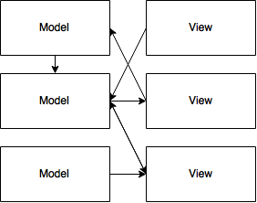
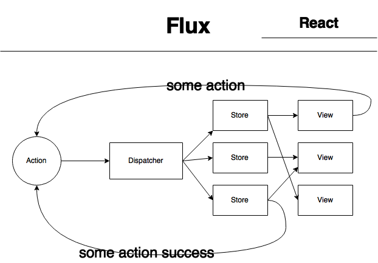

React and Flux... and a little Redux
Modern web app technologyChris Dolphin @likethemammal
Slides: http://goo.gl/7SQD6VGoals of this talk
Understandable to anyone who wants to listen.
No code examples! Cus fuck that.
Explain how web apps work.
Discuss the direction JS web apps are going.
What this talk is about
Overview of the Single Page App (SPA)
Overview of MVC.
Overview of React and Flux, and how they're new and different.
A light sprinkling of the Redux framework.
What is a Web App?
"...a website is defined by its content, while a web application is defined by its interaction with the user."
Web site is mostly static content
Web app requires user input and data processing
"...For example, a news site would be a 'website', but a spreadsheet or a collaborative calendar would be web 'applications'."
Kerrek SB
Stackoverflow, Jan 2012
Examples of web apps
Gmail
Google Calender
Meetup.com
okcupid
What is a Single Page App or SPA?
A single HTML page
No reload between page navigation
Logic is run in the browser (not the server) using Javascript
Updates the page as users interact with it (using Ajax, or XHR)
Encourages smooth transitions between actions
Examples of SPAs
Youtube
Gmail
Google Calender
How are SPAs built?
MVC or Model View Controller
A method of organizing your app's logic
The Model (M) stores and processes data
Is the user logged in?
What are the latest posts?
Has this video been watched?
The View (V) handles what the user can see
(for web apps, this is the DOM)
Is the user logged in? Then show their profile image.
Has this video been watched? Display the "watched" icon.
Is the sidebar open?
The Controller (C) manages user interaction
Did the user like this video? Then, tell the Model
Was the submit button clicked? Tell the Model to process the form.
Some real world context
Airplane
C would be dials and switches
V would be meters and read-outs
M would be internals connected to the engine, etc.
Car
C would be the gas pedal
V would be the speedometer
M would be the engine
Amoeba
C would be her feelers
V would be her color and smile
M would be her organs
The View and Controller are sometimes merged.
MV*
MVV
etc.
MVC Javascript frameworks help
Backbone (with Jquery)
Angular
Polymer
The big problem with MVC? Managing State.
What is state?
The state of the app at any given time.
Is the sidebar open?
Is the confirmation window visible?
MVC is Bi-directional data flow
Models talk to Views
Views talk to Models
What if two views change a model at the same time?
What is the true state of things?
Bi-directional data flow
React
Short Video!
What is React?
A JS library, The V in MVC
Alternative to jQuery in most cases
Helps manage state with the Virtual DOM
Easily understandable components through JSX
As a jQuery replacement
DOM Manipulation
DOM Events (onClick, onChange, etc.)
Faster at updating the DOM with the Virtual DOM
jQuery plugins with "Lifecycle functions"
The Virtual DOM
Batches changes to the DOM, one change at a time
All changes are reflected all at once
Don't have to worry about the bootneck of the DOM
Helps manage state, "one source of truth"
JSX
Alternative to keeping HTML and JS separate
More understandable components
Readable to designers
(Takes some getting used to)
(Requires transpiling/compiling)
React makes app development easy
Flux
Rethinking MVC
What is Flux?
Methodology, like MVC, not an implementation
Created by Facebook
Uni-directional data flow
What's wrong with MVC's bi-directional data flow?
Multiple Views can talk to multiple Models, and vice-versa
Everyone can talk at once
No idea what the true of things is
How does Flux solve this problem?
Uni-directional data flow
Parts of Flux
Views are still Views
Stores are like Models (data processing, state)
Dispatcher handles communication
Everything happens through Actions
this is the same diagram as before
How Flux works
Views listen to Stores for data (source of truth)
Views or Stores create Actions (USER_SIGNIN, SIDEBAR_CLOSE, etc.)
Dispatcher recieves all Actions and tells all Stores
Stores change only if they care to, if not, no biggy
Benefits of Flux
One source of truth
Everything recieves changes at once, Views update all at once
Works great with React
Simple, easy to think about
Some popular Flux implementations
Fluxxor (fluxxor.com)
Reflux (Github)
Flummox (Github)
Thats some of the newest developments in web apps
Whats the future look like?
Redux
http://rackt.github.io/redux/What is Redux?
A JS library, kinda implements Flux
Just hit version 1.0
Works great with React
Several benifits beyond Flux
(Influenced by Flux, Elm, Rx, etc.)
Whats the difference?
Uni-directional data flow, but only one Store
Store only keeps state, doesn't process data
Actions are processed by simple pure functions, Reducers
Encourages use of ES6 / ES7 (if you're into that)
How are these things beneficial?
Even easier to manage state, one Store (and source of truth)
Reducers provided a bunch of functionality for free:
Undo/Redo or Rewind/Fastforward
Time travel
Record/Replay
Is it worth it? Up to you
What we covered
What web apps are
How web apps and SPAs are built
Development with MVC
How React is different
How Flux is awesome
Touched on the future, with Redux
Thank You
Questions?
Slides: http://goo.gl/7SQD6V
http://goo.gl/7SQD6V
@likethemammal
likethemammal.com
Always looking for new projects
dolphin@likethemammal.com